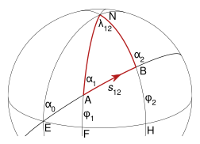

ПРЯМАЯ И ОБРАТНАЯ ГЕОДЕЗИЧЕСКИЕ ЗАДАЧИ
Общие сведения о решении главной геодезической задачи на поверхности эллипсоида
ВЫБЕРИТЕ ЗАДАЧУ
Изучите теорию и формулы для нужной задачи
Прямой геодезической задачей называют вычисление геодезических координат определяемого пункта B по координатам исходного пункта A, длине S геодезической линии и дирекционному углу A₁.

B₁, L₁ — геодезические координаты исходного пункта Q₁S, A₁ — полярные координаты определяемого пункта Q₂ B₂, L₂ — геодезические координаты пункта Q₂A₂ — обратный азимут с пункта Q₂ на пункт Q₁Прямую геодезическую задачу можно рассматривать как задачу преобразования полярных координат в геодезические. Она решается на поверхности эллипсоида с учётом его кривизны.
Вычисляем поправку ΔL:
Обратной геодезической задачей называют определение кратчайшего расстояния S между двумя пунктами и азимутов A₁ и A₂ по заданным геодезическим координатам.
B₁, L₁ — геодезические координаты пункта Q₁B₂, L₂ — геодезические координаты пункта Q₂S — геодезическое расстояние между Q₁ и Q₂A₁ — прямой азимут с Q₁ на Q₂A₂ — обратный азимут с Q₂ на Q₁Обратная геодезическая задача является обратной к прямой. Она широко используется при камеральной обработке геодезических измерений, вычислении длин сторон и дирекционных углов по координатам.